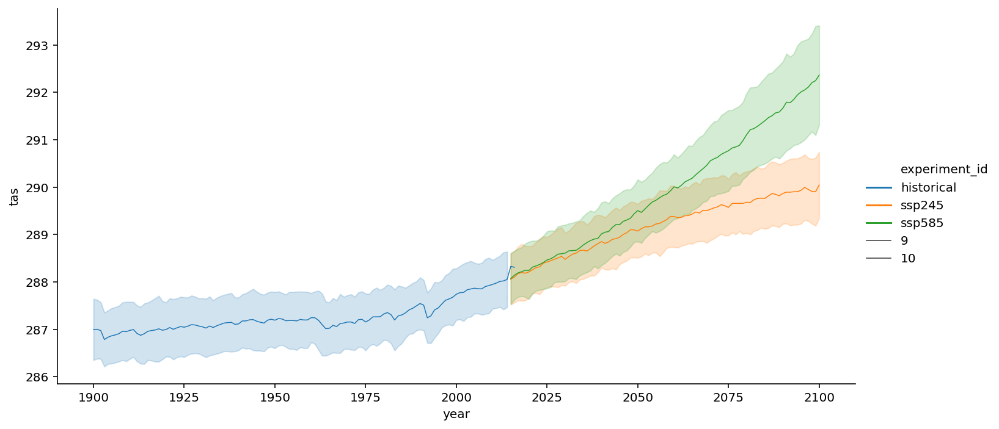

Global Mean Surface Temperature¶
This notebook uses similar techniques to ECS_Gregory_method.ipynb. Please refer to that notebook for details.
[1]:
from matplotlib import pyplot as plt
import xarray as xr
import numpy as np
import dask
from dask.diagnostics import progress
from tqdm.autonotebook import tqdm
import intake
import fsspec
import seaborn as sns
%matplotlib inline
%config InlineBackend.figure_format = 'retina'
/srv/conda/envs/notebook/lib/python3.7/site-packages/ipykernel_launcher.py:6: TqdmExperimentalWarning: Using `tqdm.autonotebook.tqdm` in notebook mode. Use `tqdm.tqdm` instead to force console mode (e.g. in jupyter console)
[2]:
col = intake.open_esm_datastore("https://storage.googleapis.com/cmip6/pangeo-cmip6.json")
col
[2]:
pangeo-cmip6-ESM Collection with 257905 entries:
> 15 activity_id(s)
> 33 institution_id(s)
> 68 source_id(s)
> 101 experiment_id(s)
> 140 member_id(s)
> 29 table_id(s)
> 368 variable_id(s)
> 10 grid_label(s)
> 257905 zstore(s)
> 60 dcpp_init_year(s)
[3]:
[eid for eid in col.df['experiment_id'].unique() if 'ssp' in eid]
[3]:
['ssp370',
'esm-ssp585',
'ssp126',
'ssp245',
'ssp585',
'ssp245-GHG',
'ssp245-aer',
'ssp245-nat',
'ssp245-stratO3',
'esm-ssp585-ssp126Lu',
'ssp119',
'ssp434',
'ssp460',
'ssp534-over']
[4]:
# there is currently a significant amount of data for these runs
expts = ['historical', 'ssp245', 'ssp585']
query = dict(
experiment_id=expts,
table_id='Amon',
variable_id=['tas'],
member_id = 'r1i1p1f1',
)
col_subset = col.search(require_all_on=["source_id"], **query)
col_subset.df.groupby("source_id")[
["experiment_id", "variable_id", "table_id"]
].nunique()
[4]:
| experiment_id | variable_id | table_id | |
|---|---|---|---|
| source_id | |||
| ACCESS-CM2 | 3 | 1 | 1 |
| ACCESS-ESM1-5 | 3 | 1 | 1 |
| BCC-CSM2-MR | 3 | 1 | 1 |
| CAMS-CSM1-0 | 3 | 1 | 1 |
| CESM2-WACCM | 3 | 1 | 1 |
| CanESM5 | 3 | 1 | 1 |
| EC-Earth3 | 3 | 1 | 1 |
| EC-Earth3-Veg | 3 | 1 | 1 |
| FGOALS-g3 | 3 | 1 | 1 |
| FIO-ESM-2-0 | 3 | 1 | 1 |
| GFDL-CM4 | 3 | 1 | 1 |
| INM-CM4-8 | 3 | 1 | 1 |
| IPSL-CM6A-LR | 3 | 1 | 1 |
| KACE-1-0-G | 3 | 1 | 1 |
| MIROC6 | 3 | 1 | 1 |
| MPI-ESM1-2-HR | 3 | 1 | 1 |
| MPI-ESM1-2-LR | 3 | 1 | 1 |
| MRI-ESM2-0 | 3 | 1 | 1 |
[5]:
def drop_all_bounds(ds):
drop_vars = [vname for vname in ds.coords
if (('_bounds') in vname ) or ('_bnds') in vname]
return ds.drop(drop_vars)
def open_dset(df):
assert len(df) == 1
ds = xr.open_zarr(fsspec.get_mapper(df.zstore.values[0]), consolidated=True)
return drop_all_bounds(ds)
def open_delayed(df):
return dask.delayed(open_dset)(df)
from collections import defaultdict
dsets = defaultdict(dict)
for group, df in col_subset.df.groupby(by=['source_id', 'experiment_id']):
dsets[group[0]][group[1]] = open_delayed(df)
[6]:
dsets_ = dask.compute(dict(dsets))[0]
[7]:
# calculate global means
def get_lat_name(ds):
for lat_name in ['lat', 'latitude']:
if lat_name in ds.coords:
return lat_name
raise RuntimeError("Couldn't find a latitude coordinate")
def global_mean(ds):
lat = ds[get_lat_name(ds)]
weight = np.cos(np.deg2rad(lat))
weight /= weight.mean()
other_dims = set(ds.dims) - {'time'}
return (ds * weight).mean(other_dims)
[8]:
expt_da = xr.DataArray(expts, dims='experiment_id', name='experiment_id',
coords={'experiment_id': expts})
dsets_aligned = {}
for k, v in tqdm(dsets_.items()):
expt_dsets = v.values()
if any([d is None for d in expt_dsets]):
print(f"Missing experiment for {k}")
continue
for ds in expt_dsets:
ds.coords['year'] = ds.time.dt.year
# workaround for
# https://github.com/pydata/xarray/issues/2237#issuecomment-620961663
dsets_ann_mean = [v[expt].pipe(global_mean)
.swap_dims({'time': 'year'})
.drop('time')
.coarsen(year=12).mean()
for expt in expts]
# align everything with the 4xCO2 experiment
dsets_aligned[k] = xr.concat(dsets_ann_mean, join='outer',
dim=expt_da)
[9]:
with progress.ProgressBar():
dsets_aligned_ = dask.compute(dsets_aligned)[0]
[########################################] | 100% Completed | 1min 37.4s
[10]:
source_ids = list(dsets_aligned_.keys())
source_da = xr.DataArray(source_ids, dims='source_id', name='source_id',
coords={'source_id': source_ids})
big_ds = xr.concat([ds.reset_coords(drop=True)
for ds in dsets_aligned_.values()],
dim=source_da)
big_ds
[10]:
xarray.Dataset
- experiment_id: 3
- source_id: 18
- year: 451
- source_id(source_id)<U13'ACCESS-CM2' ... 'MRI-ESM2-0'
array(['ACCESS-CM2', 'ACCESS-ESM1-5', 'BCC-CSM2-MR', 'CAMS-CSM1-0', 'CESM2-WACCM', 'CanESM5', 'EC-Earth3', 'EC-Earth3-Veg', 'FGOALS-g3', 'FIO-ESM-2-0', 'GFDL-CM4', 'INM-CM4-8', 'IPSL-CM6A-LR', 'KACE-1-0-G', 'MIROC6', 'MPI-ESM1-2-HR', 'MPI-ESM1-2-LR', 'MRI-ESM2-0'], dtype='<U13') - year(year)float641.85e+03 1.851e+03 ... 2.3e+03
array([1850., 1851., 1852., ..., 2298., 2299., 2300.])
- experiment_id(experiment_id)<U10'historical' 'ssp245' 'ssp585'
array(['historical', 'ssp245', 'ssp585'], dtype='<U10')
- tas(source_id, experiment_id, year)float64287.0 287.0 287.2 ... nan nan nan
array([[[287.00749364, 287.01698452, 287.17454216, ..., nan, nan, nan], [ nan, nan, nan, ..., nan, nan, nan], [ nan, nan, nan, ..., nan, nan, nan]], [[287.78735509, 287.66659835, 287.60427076, ..., nan, nan, nan], [ nan, nan, nan, ..., nan, nan, nan], [ nan, nan, nan, ..., nan, nan, nan]], [[287.53316044, 287.57944112, 287.74630242, ..., nan, nan, nan], [ nan, nan, nan, ..., nan, nan, nan], [ nan, nan, nan, ..., nan, nan, nan]], ..., [[287.06461582, 287.08806987, 287.28139775, ..., nan, nan, nan], [ nan, nan, nan, ..., nan, nan, nan], [ nan, nan, nan, ..., nan, nan, nan]], [[286.62673094, 286.60913109, 286.61609431, ..., nan, nan, nan], [ nan, nan, nan, ..., nan, nan, nan], [ nan, nan, nan, ..., nan, nan, nan]], [[286.93942387, 286.99113065, 286.91069985, ..., nan, nan, nan], [ nan, nan, nan, ..., nan, nan, nan], [ nan, nan, nan, ..., nan, nan, nan]]])
[11]:
df_all = big_ds.sel(year=slice(1900, 2100)).to_dataframe().reset_index()
df_all.head()
[11]:
| experiment_id | source_id | year | tas | |
|---|---|---|---|---|
| 0 | historical | ACCESS-CM2 | 1900.0 | 287.019917 |
| 1 | historical | ACCESS-CM2 | 1901.0 | 286.966182 |
| 2 | historical | ACCESS-CM2 | 1902.0 | 286.994328 |
| 3 | historical | ACCESS-CM2 | 1903.0 | 286.797043 |
| 4 | historical | ACCESS-CM2 | 1904.0 | 286.803313 |
[12]:
sns.relplot(data=df_all,
x="year", y="tas", hue='experiment_id',
kind="line", ci="sd", size=10, aspect=2);

[13]:
# why are there axis legends for 9, 10 - doesn't make sense
df_all.experiment_id.unique()
[13]:
array(['historical', 'ssp245', 'ssp585'], dtype=object)
[ ]: